YCN각 현장의 위험 요인에 맞춰,
설계부터 설치, 운영, 유지보수까지맞춤형 스마트 솔루션을 제공합니다.
원스톱 서비스
설계, 설치, 관리, 운영, 철거까지
통합 플랫폼
현장의 모든 데이터를 하나로
통합해 실시간으로 관제현장 맞춤 구성
각 현장상황에 따른 맞춤형 솔루션 제공
전국 운영 체계
전문 인력이 전국 현장의
설치와 A/S 유지보수
YCN의 AI기반 솔루션은
다양한 분야에 접목할 수 있습니다
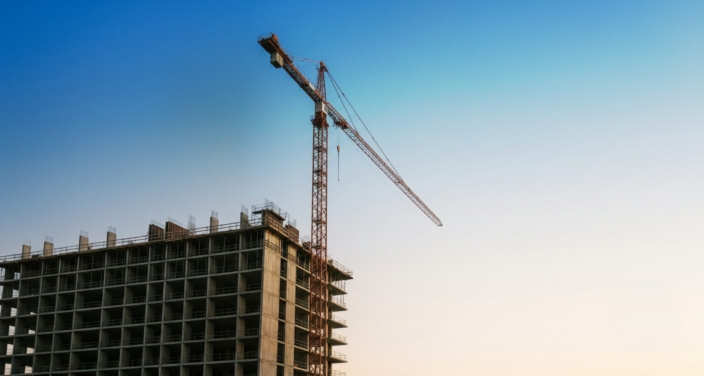
01건설건설현장의 위험 요소를 실시간으로 감지하고 통제합니다.
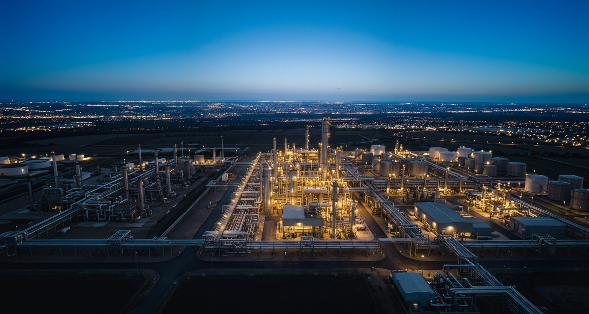
02플랜트플랜트 설비의 상태를 상시 모니터링해 사고를 예방합니다.
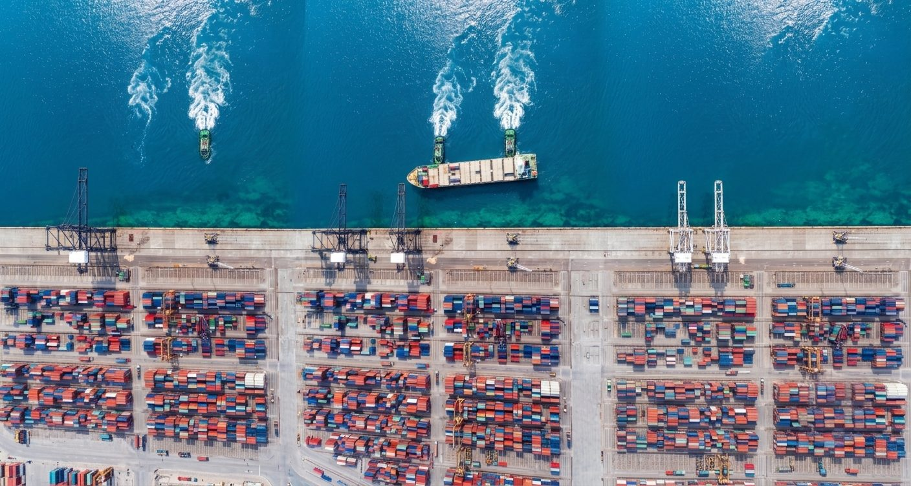
03산업산업현장 전반의 안전 데이터를 통합해 관리합니다.
현장에 필요한 안전 서비스를 한 번에,원스톱 안전관리 솔루션을 제공합니다.
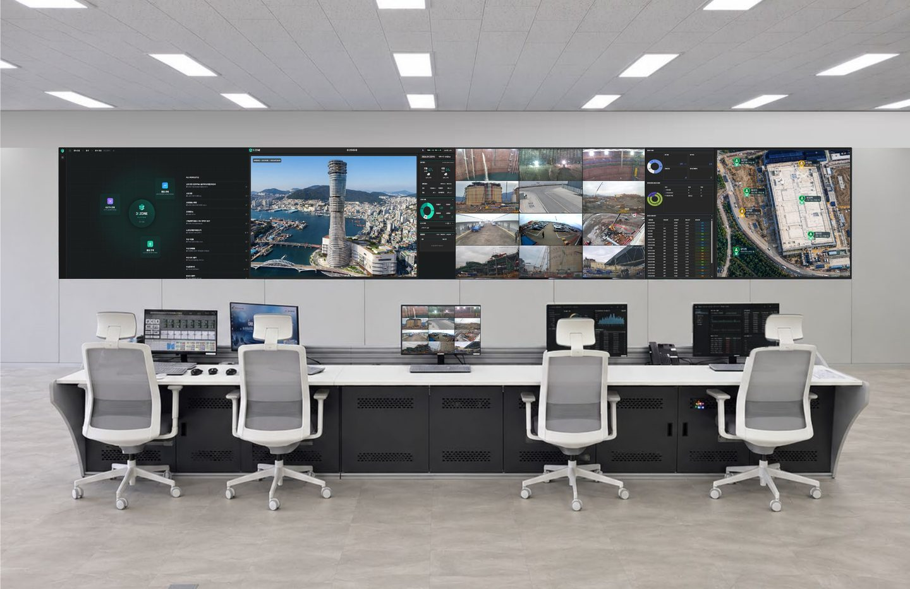
현장의 모든 데이터를 하나로 통합해 실시간으로 관제
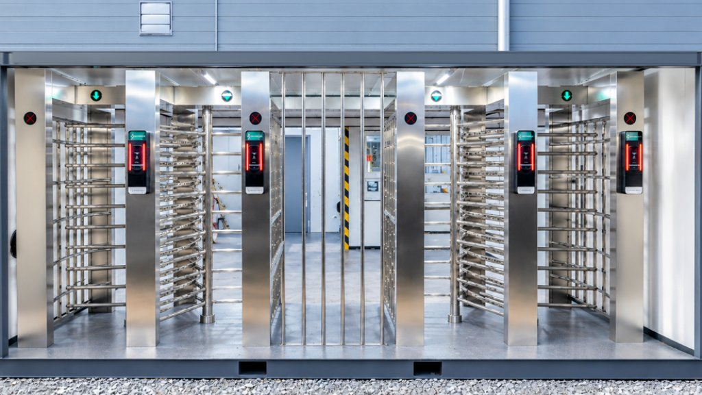
출입구에서 시작되는 안전, 정확한 인원 관리와 전자카드제 대응
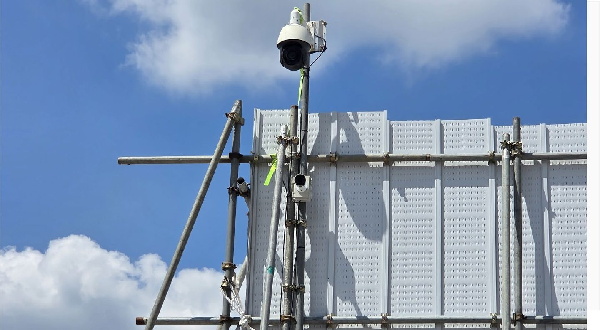
사각지대 없는 실시간 영상 관제와 양방향 현장 소통
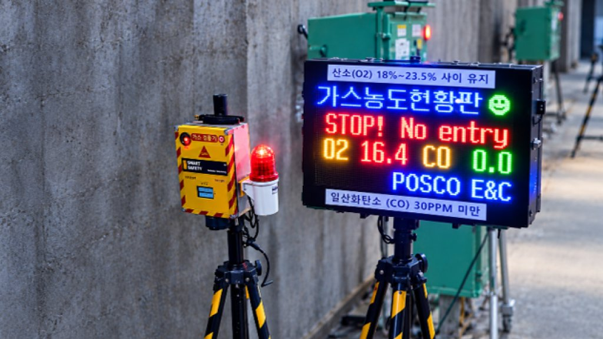
보이지 않는 위험까지 데이터로 읽고 즉시 대응
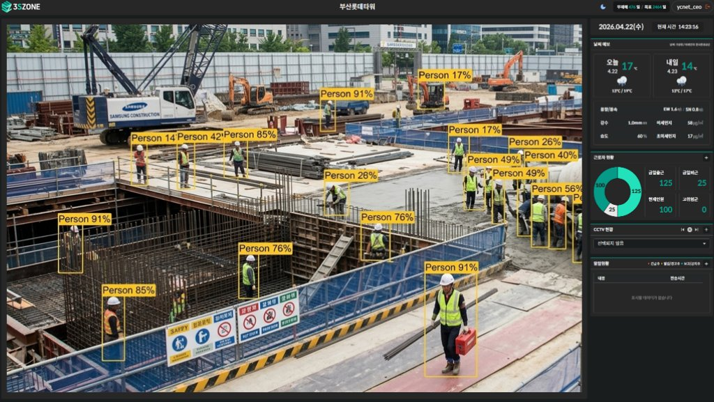
24시간 멈추지 않는 AI 영상 분석, 감지에서 대응까지
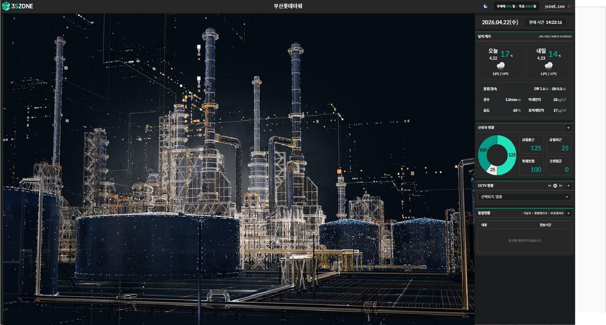
현장을 가상공간에 똑같이 구현해 분석 · 예측까지
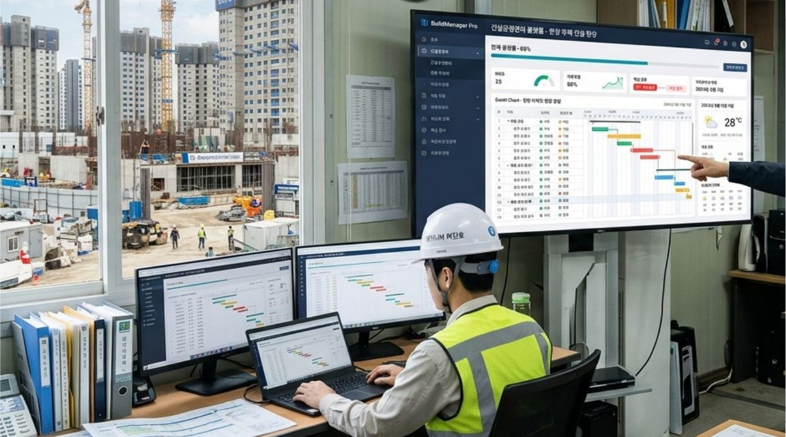
3D 공정 시각화로 계획부터 안전까지 한 번에 관리
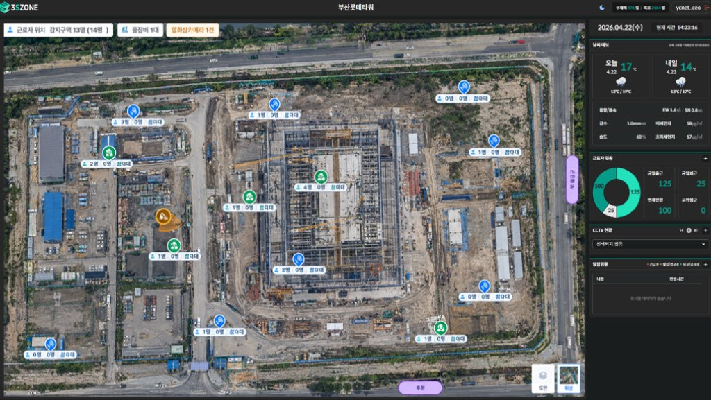
사람 · 차량 · 장비의 위치를 실시간으로 파악하는 위치 관제
Our System
안전 통합관제 (3SZONE)
현장의 모든 데이터를 하나로
통합해 실시간으로 관제출역 관리 시스템
출입구에서 시작되는 안전, 정확한 인원 관리와 전자카드제 대응
영상 관제 시스템
사각지대 없는 실시간 영상 관제와
양방향 현장 소통센서 관제 시스템
보이지 않는 위험까지 데이터로 읽고
즉시 대응AI 솔루션
24시간 멈추지 않는 AI 영상 분석,
감지에서 대응까지디지털 트윈 시스템
현장을 가상공간에 똑같이 구현해 분석 · 예측까지
건설 공정관리 플랫폼
3D 공정 시각화로 계획부터 안전까지 한 번에 관리
위치 관제 솔루션
사람 · 차량 · 장비의 위치를 실시간으로 파악하는 위치 관제
모든 현장 데이터를 한눈에 모니터링 하여선제적 안전관리 구현
- 출입관제시스템
- 영상관제시스템
- 센서관제시스템
- 공정관리
- 위치관제시스템
- AI 솔루션
- 디지털트윈
YCN과 함께하는 고객사
더 큰 안전의 가치를 함께 만들어갑니다.
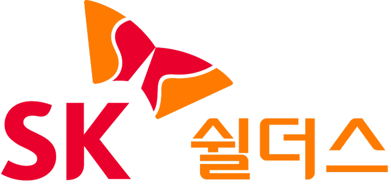
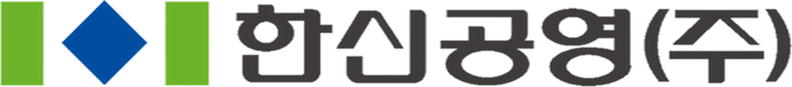
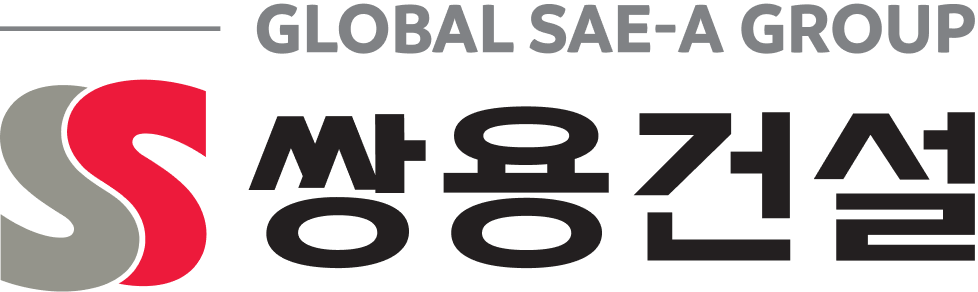
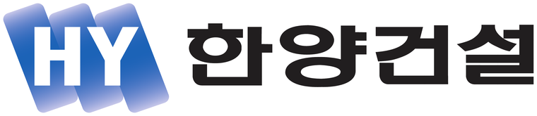
YCN의 맞춤형 통합안전관리 솔루션으로편리하고 스마트한 안전관리를 경험해보세요.
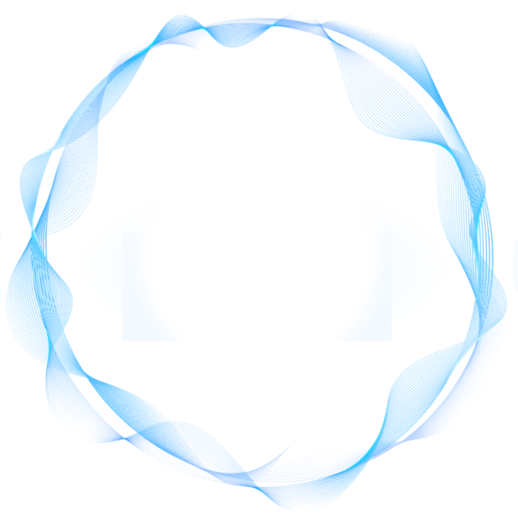